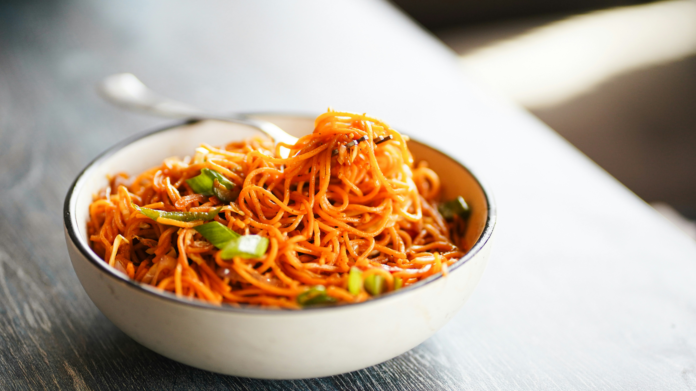

Home
Garlic Noodles

Description
This is a beautifully simple dish that you can easily add to your repertoire. Who doesn't love garlic and who doesn't love noodles?
Ingredients
For the Noodles
- 3 ounces of spaghetti
- 2 tablespoons salted butter
- 4 cloves of garlic, minced
- 1/8 cup parmesan cheese
- 1 tablespoon green onion
- 1/2 teaspoon red pepper flakes
For the Sauce
- 1 tablespoon soy sauce
- 1/2 tablespoon oyster sauce
- a few drops of liquid smoke
- 1 teaspoon fish sauce
- 1/8 teaspoon sesame oil
- cayenne pepper, to taste
Steps
- Stir soy sauce, oyster sauce, liquid smoke, fish sauce, sesame oil, and cayenne pepper together in a small bowl for the sauce, set aside.
- Melt your butter in a skillet over medium heat.
- Add the garlic; cook and stir until it is just fragrant, should take about 1 minute.
- Stir in the sauce you made in Step 1 and turn off the heat.
- Bring a large pot of salted water to a boil. Cook the spaghetti in boiling water, stirring occasionally. Boil for about 12 minutes, until the noodles are tender but still slightly firm to the bite.
- Transfer spaghetti into the sauce, bringing some of the cooking water with it. Toss until it is well coated.
- Stir in the parmesan cheese.
- Top with the green onions and red pepper flakes as garnish.
- Serve and enjoy your home-cooked meal!